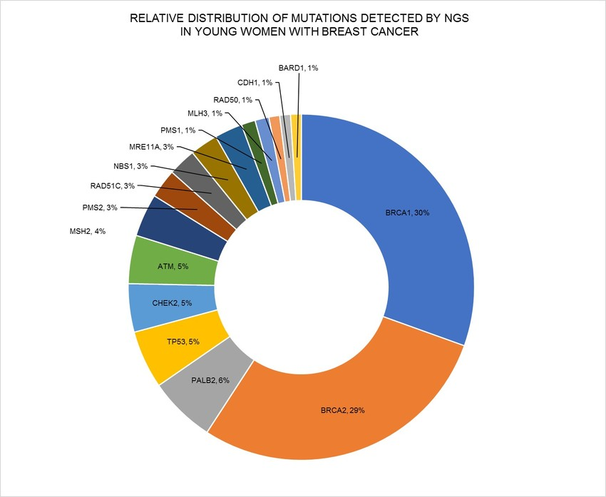

What is Breast Cancer?
Breast cancer is the most common cancer amongst women in India. It occurs when some breast cells grow abnormally, dividing rapidly to form lumps or masses. These cells may spread (metastasize) to other body parts.
The number of women being newly detected with Breast Cancer in India is fast rising, no doubt about that. Also, India has a predominantly younger population, so we are bound to see more breast cancer cases in younger women, no doubt about that either. This section has a wealth of information related to statistics about Breast Cancer in India.
Researchers have identified hormonal, lifestyle and environmental factors that may increase the risk of breast cancer. But it is unclear why some women who have no risk factors develop cancer, yet others with risk factors never do. It is likely that breast cancer is caused by a complex interaction of genetic makeup and environment factors.
It can spread to other parts of the body if not detected early.
How Does It Develop?
Breast cancer develops when there are changes in the DNA of cells within the breast tissue, causing them to grow and multiply uncontrollably, forming a tumor.
The cancer may begin in the milk ducts (ductal carcinoma) or in the lobules (lobular carcinoma).
Genetic mutations: The primary cause of breast cancer is DNA mutations that disrupt normal cell growth and division, allowing cells to replicate rapidly without contro
Inherited risk:Some people inherit genetic mutations, like those in the BRCA genes, which significantly increase their risk of developing breast cancer.
Environmental factors:Lifestyle factors like exposure to hormones, alcohol consumption, radiation, obesity, and reproductive history can also contribute to the development of breast cancer.
Common Causes & Risk Factors
Several factors contribute to the occurrence of breast cancer, including:
- Genetic mutations: Family history of breast cancer increases risk.
- Hormonal imbalance: Increased estrogen levels can promote cancer cell growth.
- Age: More common in women over 50.
- Obesity: Excess fat tissue raises estrogen levels.
- Radiation exposure: Previous radiation therapy can increase risk.
Symptoms of Occurrence
Early symptoms may not be noticeable, but common signs include:
- Lump or thickening in the breast or underarm.
- Changes in breast shape or size.
- Unusual nipple discharge or inversion.
- Skin dimpling or redness.
- Persistent breast pain.
- Peeling, scaling, crusting or flaking of the area of skin surrounding the nipple or breast skin.
- Itchy, scaly sore or rash on the nipple.
- Inverted nipple (newly developed)
Stages of Breast Cancer
Breast cancer is classified into different stages based on tumor size and spread:
- Stage 0: Non-invasive (cancer cells remain in place).
- Stage 1-2: Early-stage cancer, confined to the breast.
- Stage 3: Advanced cancer, spreading to lymph nodes.
- Stage 4: Metastatic cancer, spreading to other organs.